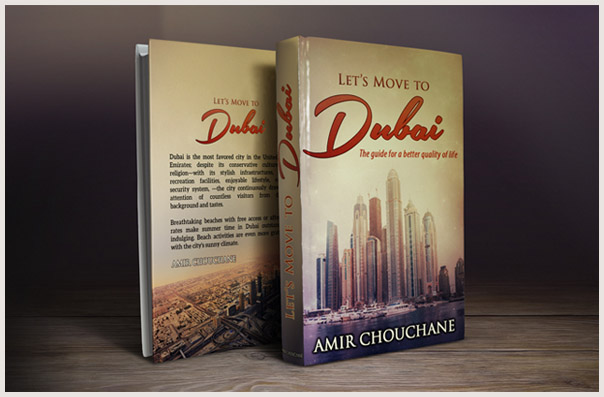

Dubai is the business and cultural hub of the Middle East and, as a result, it is a magnet for hungry professionals looking to find their dream jobs.
These eager men and women want to build successful careers that will allow them to live, work and play in the bustling metropolis that is Dubai.
If you are reading this, you are probably one of them.
So how can you make yourself stand out among the many qualified job candidates seeking employment in Dubai right now?
Well, to help you I’ve created a comprehensive guide that reveals the secrets I’ve discovered over the past 10 years.
Now before you dismiss me as unqualified or inexperienced, let me explain – myself and my team are professional Human Resource Representatives who have worked with many of the biggest, most successful companies in Dubai.
In other words, we know exactly what these companies are looking for and exactly how you can best position yourself to get the job of your dreams.
In short, we know how to overcome the many obstacles that job-seekers face when entering the Dubai job market, such as:
Lack of understanding of the unique Dubai business culture
Difficulty building a network
The bad, useless job search advice other “so-called experts” dispense
You see, I’ve been on both sides of the job search process. I moved to Dubai and had to find a job fast or risk having to go back home defeated and embarrassed.
I sent out literally hundreds of CVs and didn’t hear anything back. I failed numerous interviews. But I learned and I was able to land a human resources job at a well-known company.
Now 10 years later my human resources work has given me a unique insight into the other side of the job hunt process. Now I am intimately familiar with what companies look for both in your CV-resume and in a job interview.
But I also still remember how difficult it was for me to land that first job. So with my extensive experience on both sides of the job search process, I’ve created a new resource … a simple, highly effective solution that solves all the difficulties of finding a great job in Dubai.
That’s right, I have developed a complete blueprint that you can follow to find your dream job in record time. Just like with bodybuilding where you follow specific workouts to build specific muscles, with my system you follow certain steps to achieve certain results.
Instead of building muscle, with my system you’ll be securing interviews and job offers!
Hello, my name is Amir Chouchane,and I’ve become an expert on finding employment in Dubai because I’ve spent years doing exactly that.
I’ve done the legwork and I’ve spent lots and lots of time figuring out how it all works.
As I mentioned earlier I moved to Dubai and launched my own job search 10 years ago. I was young and eager and thought I would have no problem finding a good job. Of course, I couldn’t have been more wrong.
While I thought I would make the perfect employee, it turns out I had a lot of trouble getting the hiring professionals to agree with me.
My CVs didn’t generate call backs and the few interviews that I did land did not go well at all.
But as I failed again and again I began to notice things that I could do differently, things that I could do better … and then after I was employed and gained more and more professional experience I came to understand what companies are really looking for.
Today, I stand before you as someone who knows what to emphasize and what to draw attention away from when searching for a job.
I know how to make yourself irresistible to companies and I want
to reveal all of this to you so you don’t have to go through all the
stressful trial and error that I had to go through.
But I’m not going to just share what I’ve learned, I’ve also
compiled a top team of human resource professionals who
have experience in a wide variety of areas and I’ve gotten
them to reveal all of their secrets as well.
I and my staff also interviewed current CEO’s,
managers and entrepreneurs in Dubai while I wrote
this book to ensure it is filled with the very latest
tips and advice you need to know.
I wrote it all down, taking care not to leave anything
out, so that now you can get your hands on a
complete systematic and actionable approach
that you can use to launch your career in Dubai …
without making frustrating mistakes or having to
go through costly trial and error.
To be completely honest with you, the idea for this book came to me when my nephew approached me at a family reunion and mentioned that he was going to move to Dubai.
He knew that I had done the same thing 10 years ago and he wanted to know if I had any advice.
I told him that I would write a few things down and send them to him … and then before I knew it I had the beginnings of a book.
Now you can get your hands on the very same time-saving job search secrets that I shared with my own flesh and blood.
Now I want to offer the system online so even more people can benefit from it.
Just follow my steps and I’m confident this system will work for you as well!
If you're a jobless or disillusioned worker, particularly one in their 20s, 30s or 40s (though this system will work for anyone) this is the system for you!
You’ll learn how to ace interviews and practically have employers begging you to come work for them.
My clients have used this exact system to get the following positions:
All of the above people secured these positions after coming to Dubai with no special connections or experience. They simply followed my system and landed their dream jobs.
The simple truth is, most people spin their wheels when it comes to looking for a job. More often than not, they use the wrong strategy, approach and resources.
“Let’s Work in Dubai” contains a complete road map for you to follow. In addition, this system is a tool that you can use every time you decide that it’s time for your career to go in a different direction
How much would you expect to pay for advice and information that quite literally could change your life by allowing you to land your dream job in Dubai faster and easier than you ever thought possible?
Certainly, even hundreds of dollars would not be unreasonable to many considering all the money you will be making in your new position.
But relax you won’t have to pay near that much for “Let’s Work in Dubai.”
In fact, right now, for a limited time, you can take advantage of a special promotional offer and receive the complete “Let’s Work in Dubai” system, which includes the ebook, the personal CV-resume site and the LinkedIn Profile, for just $29 – that’s a full $20 off the regular price of $49!
And remember: “Let’s Work in Dubai” is filled with expert insider advice and practical tips that will help you avoid the costly mistakes job searchers typically make when looking for employment in Dubai – saving you valuable time and frustration and allowing you to discover the absolute surest and quickest path to the perfect job.
In fact, after reading “Let’s Work in Dubai” you will know exactly how to land your dream job in Dubai – and since this ebook is available as an instant download you will be able to begin benefiting from the expert advice and information it contains immediately!
Here is something else important to consider – when you get my ebook you just won’t be getting a book, you’ll also be getting a partner to assist and aid you in your job search.
I’ll be available to answer your questions and give you advice. You can email me, call me or we may even be able to meet in person!
Don’t try to go it alone! Get the advice and support you need to find your dream job fast!
If you want to boost your career by making a move to Dubai...if you want to experience the current, on-going historical phenomenon that is the rise of this business and cultural hub of the Middle East … if you want to gain valuable life experience and build your savings while escaping the horrible job markets that exist in many other areas of the world.
You’ll get a precise formula to find your dream job in Dubai – no longer will you have to read all those blogs with their inaccurate advice. You also won’t need:
With this system ANYONE can find their dream job in Dubai. So why make yourself go through a lengthy, exhausting, frustration-filled job search? When you could save yourself a lot of hard work as well as valuable time and money by getting “Let’s Work in Dubai” today?
But don’t delay!
I must warn you that I can’t keep this system at this low price for long. It is far too valuable.
To take advantage of this tremendous offer while it lasts.
Don’t forget, we’ll also help you set up a resume-CV website and craft an irresistible LinkedIn profile.
That’s right, should you decide at any time that this system
is not for you, you can request a full refund of your purchase price. It doesn’t matter if it is one year after your purchase, 5 years after or even 10 years after, you can still get that full refund.
I don’t think I can be any fairer than that. Either start getting interviews for your dream job or get your purchase price back!
You can’t just sit around and hope that someone eventually hands you success – it won’t happen.
You need to take action. This is certainly not a riskless move.
But pretty much every client that I have had has followed my system in Dubai and now has a job position and responsibilities –and an income – that would make job-seekers like you green with envy.
The decision is now yours. To order “Let’s Work in Dubai,” click on the order now button below.
P.S. Remember my special promotional offer won’t last long. Receive “Let’s Work in Dubai” for just $29 before it is too late!
P.P.S Also remember, that you are making this purchase at absolutely no risk. So grab this special price while you can! If you decide an anytime that this system isn’t for you, you can request a full refund of your purchase price.
P.P.P.S Let me give you one more reason why you should buy this system today:
It gives you all the very best advice and information on landing your dream job in Dubai. Why spend hours and hours tracking down information that may or may not be reliable when you can learn everything you need to know to secure your dream job – and I do mean everything from a convenient ebook and website?
Still questioning whether this system is right for you? Click on the chat button how it can benefit you in particular.